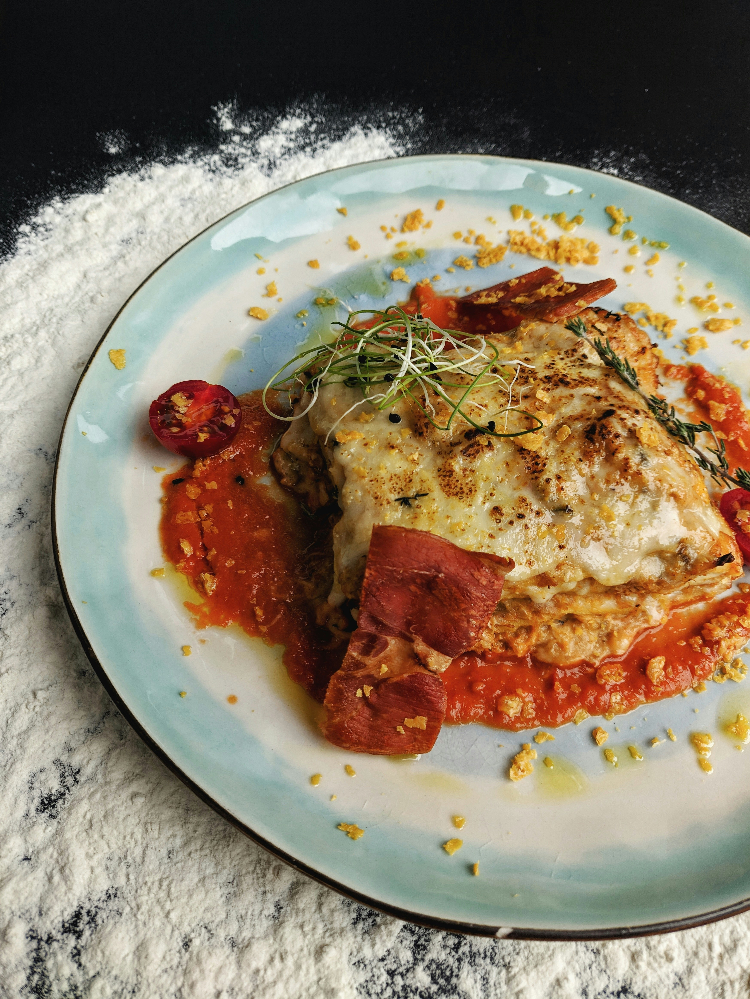

About This Recipe
Lasagna is a popular baked pasta dish made with layers of pasta sheets, rich tomato sauce, seasoned ground beef, and creamy cheese. It is a satisfying meal for family dinners and special occasions. Follow these steps to prepare a delicious homemade lasagna.
Preparation
25 minutes
Cooking
45 minutes
Servings
4 people
Ingredients
Prepare the following ingredients:
- 8 lasagna pasta sheets, or enough for your baking dish
- 300 g ground beef
- 1 small onion, finely chopped
- 2 cloves garlic, minced
- 2 cups tomato sauce
- 1 cup shredded mozzarella cheese
- 1/2 cup grated Parmesan cheese
- 1 tablespoon cooking oil
- 1 teaspoon dried oregano
- Salt and black pepper to taste
Step-by-Step Instructions
- Preheat the oven: Preheat your oven to 180°C (350°F).
- Cook the pasta: Prepare the lasagna sheets according to the package instructions if they require pre-cooking.
- Cook the onion and garlic: Heat the oil in a pan. Add the chopped onion and garlic, then cook until softened.
- Prepare the meat sauce: Add the ground beef and cook until browned and thoroughly cooked. Stir in the tomato sauce, oregano, salt, and black pepper. Simmer for 10 minutes.
- Prepare the first layer: Spread a thin layer of meat sauce over the bottom of a baking dish.
- Build the layers: Add pasta sheets, meat sauce, and mozzarella. Repeat the layers until the ingredients are used, finishing with sauce and cheese on top.
- Bake the lasagna: Cover the dish with foil and bake for about 25 minutes. Remove the foil and bake for another 15–20 minutes, until bubbling and golden.
- Let it rest: Allow the lasagna to rest for about 10 minutes before cutting it into portions.
- Serve and enjoy: Serve warm and enjoy your homemade lasagna.
Helpful Tips
- Do not add too much sauce, or the lasagna may become watery.
- Let the lasagna rest before slicing to help it hold its shape.
- Make sure the ground beef is thoroughly cooked.
- Use a baking dish suitable for your oven.